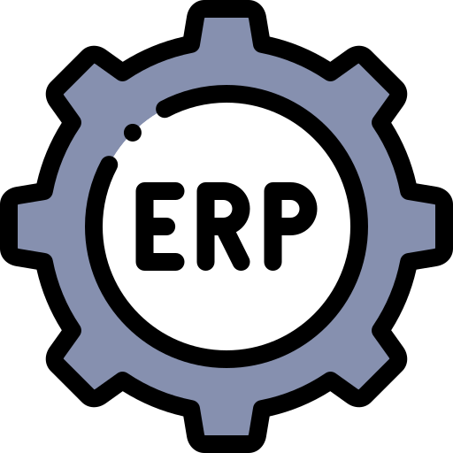

Quem Sou?
Sou desenvolvedor backend com foco em Node.js e TypeScript.
Tenho experiência na construção de APIs escaláveis, uso de bancos de dados relacionais,
testes automatizados, Docker e CI/CD.
Atuo com integração ao ERP Sankhya e aplico boas práticas como Clean Code
para entregar soluções eficientes e de valor para o negócio.
- Idade26
- NacionalidadeBrasileiro
- Cidade/EstadoPatrocínio, MG
- E-mailalexandremrr2014@gmail.com
Educação
Análise e desenvolvimento de Sistemas
2017 - 2020
IFTM - Campus Patrocínio
O curso superior do ADS me capacitou para desenvolver,
analisar, projetar, implementar e atualizar
sistemas de informação para diversos setores de atividades.
Técnico, Manutenção e Suporte em Informática
2014 - 2016
IFTM - Campus Patrocínio
No curso técnico integrado ao ensino medio aprendi a fazer a
manutenção
e suporte técnico em sistemas computacionais e os equipamentos a eles conectados
(formatação, montagem e desmontagem de computadores, instalaçao de redes fisicas e lógicas,
dentre outros).
Curso de Inglês - Níveis Intermediário II e Avançado I & II
2015 - 2016
IFTM - Centro de Idiomas
Através desse curso desenvolvi ainda mais meu inglês, no qual
eu já possuia vasto conhecimento.
Experiência Profissional
Desenvolvedor de Software FullStack
Jul. 2022 - Atual
Tecprime Soluções
- Desenvolvimento de API REST em Node.js com TypeScript
- Participação em sprints ágeis com uso de Scrum e Kanban
- Desenvolvimento PL/SQL nos bancos de dados Oracle, MYSQL, SQL Server e PostgreSQL
- Utilização do Docker para criação e gerenciamento de ambientes isolados
- Desenvolvimento Angular, garantindo consistência na comunicação entre as camadas da aplicação
- Desenvolvimento com TypeORM e Sequelize para abstração e persistência de dados em bancos relacionais
- Participação ativa em code reviews e discussões técnicas para padronização e evolução contínua do código
- Contribuições com documentação de APIs e processos internos.
- Automação de tarefas recorrentes com agendadores em TypeScript (cron) e consumo de APIs externas com controle assíncrono e lógica de fila integrada ao ERP Sankhya.
Assistente de Sistemas nivel IV
Fev. 2021 - Jul. 2022
Expocaccer - Cooperativa dos Cafeicultores do Cerrado
- Desenvolvimento ADVPL (ERP Protheus - TOTVS)
- Manuseio do banco de dados em SQL (Selects, Inserts, Updates, Deletes)
- Criação de relatórios através do Crystal Reports (SAP) e TReports (Totvs)
- Versionamento do código através Git/Gitlab
- Suporte ao sistema do usuário através do Ultra VNC
- Suporte OTRS.
Assistente de Suporte de TI
Jul. 2017 - Nov. 2018
Expocaccer - Cooperativa dos Cafeicultores do Cerrado
- Suporte remoto e presencial
- Manutenção de computadores, notebooks, tablets e voip
- Organização de rede física da internet
- Montagem do hardware de servidores
- Suporte OTRS
- Formatação de computadores, notebooks, tablets
- Responsável também pela execução das rotinas de backup dos servidores
- Monitoramento da rede lógica da internet.
Codificação, Tecnologias e Metodologias Conhecimento
TypeScript
JavaScript
Node.Js
API REST
Git/GitLab/GitHub
Docker
Metodologias Agil
SQL
NoSql
TypeORM
Desenvolvimento Backend
Sólida experiência no desenvolvimento de APIs RESTful utilizando Node.js com TypeScript,
aplicando princípios de Clean Code. Domina conceitos como processamento assíncrono,
filas de execução, jobs agendados e integrações com sistemas ERP.
Bancos de dados relacionais e modelagem
Trabalho com bancos como PostgreSQL, SQL Server, MySQL e Oracle,
com domínio em modelagem relacional, escrita de queries otimizadas
e integração entre sistemas com foco em performance e integridade de dados.

ERP Sankhya e automações de negócios
Atua com desenvolvimento de soluções para o ERP Sankhya,
integrando regras de negócio complexas ao backend,
criando fluxos que envolvem o setor agrícola e financeiro,
e promovendo automações que geram ganho de escala e eficiência.
Comprometimento com evolução contínua
Graduado em Análise e Desenvolvimento de Sistemas pelo IFTM, busco constante atualização,
participa de cursos e projetos próprios no GitHub
e mantém uma postura proativa diante de novos desafios técnicos e profissionais.